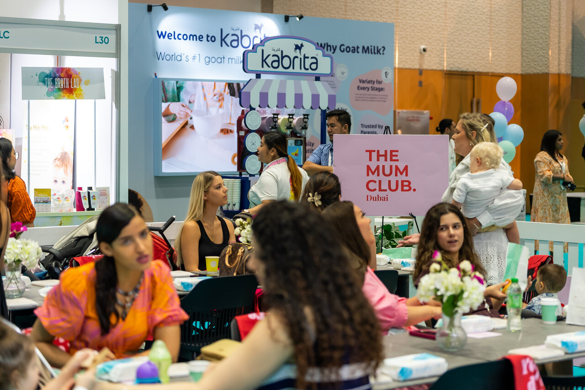
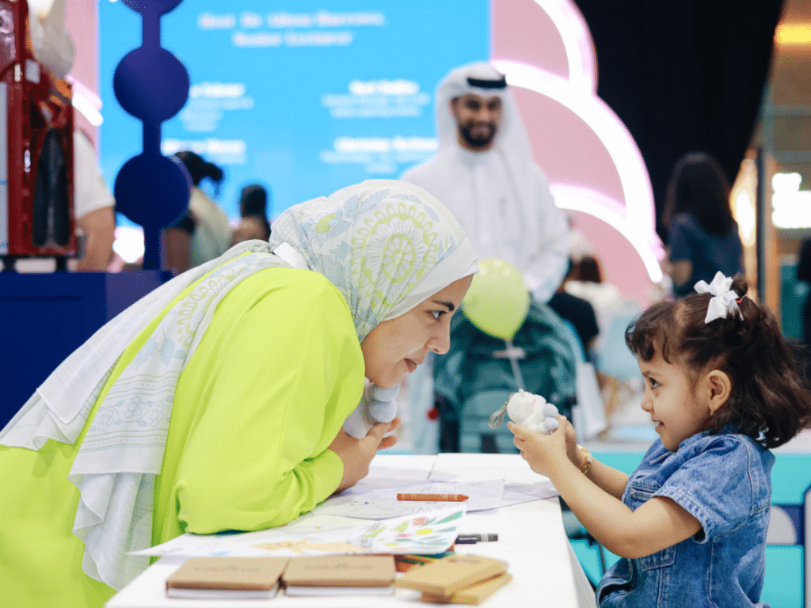

01
Baby Expo Riyadh
A market-entry campaign built around relevance, precision, and adaptability.
Objective
Launch Baby Expo in Saudi Arabia and drive awareness and attendance for its Riyadh debut.

Context
The campaign operated under two major constraints: a limited budget in a market with high media and influencer costs, and a one-month permit delay that compressed the launch timeline.
Approach
The campaign shifted from a paid-media-heavy model toward PR and influencer-led execution. Creator selection focused on audience alignment rather than follower count, targeting family and lifestyle creators, expecting parents, and educational parenting voices.

During the Delay
While permits were pending, educational creators produced non-promotional parenting content focused on childcare and newborn preparation, helping maintain audience interest before the official launch campaign began.
Scope
- Influencer outreach and coordination
- Content toolkit development
- Messaging and talking points
- Media outreach and press support
- Coverage reporting
- Speaker coordination support


Results
Press coverage included Time Out Riyadh, What’s On Saudi Arabia, and Sayidaty.
Press Coverage
Responsibilities
- Client communication management
- Influencer coordination
- Media planning support
- Content toolkit development
- Timeline and deliverable management